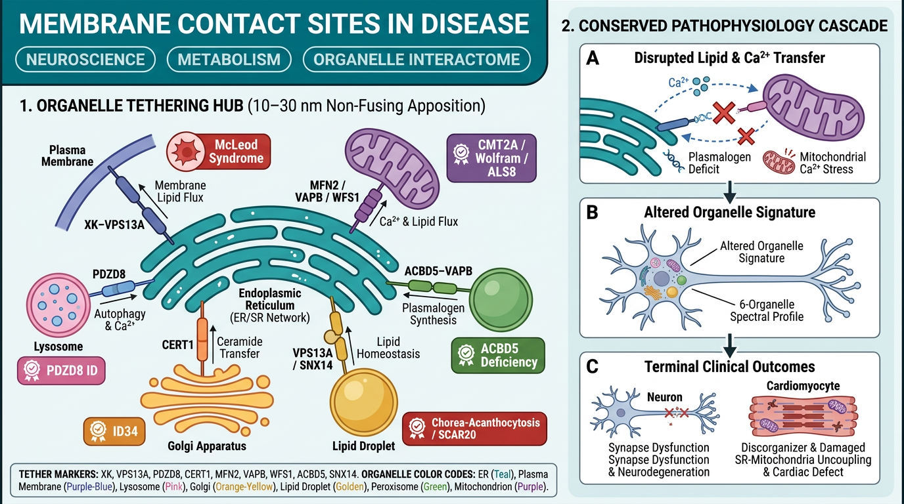

Figure Legend & Pathograph Node Alignment (7 panels) 25 linked nodes
Membrane Contact Sites: Organelle Communication in Disease
Organelles exchange lipids, calcium and signals at membrane contact sites,
where tethering proteins hold two membranes close without fusing them. Every
organelle makes such contacts, often with several partners at once. Before this
project, about twenty disorder entries described a contact-site defect in their
own words, with nothing linking them. The membrane_contact_site_dysfunction
module now gives them a shared chain:
- Loss of organelle tethering at a contact site (trigger)
- Disrupted non-vesicular lipid transfer between organelles (key conformance target), with a parallel arm for impaired ER-to-mitochondria calcium transfer
- Organelle membrane lipid imbalance, with plasmalogen (ether phospholipid) synthesis at ER-peroxisome contacts as the worked example
- Altered organelle morphology, number and distribution
- Impaired synapse formation and maturation
- Neural cell dysfunction, and (from mouse and ESC-derived models) impaired cardiomyocyte differentiation and maturation
Conformance status
| Entry | Organelle pair | Tether / protein | Conforms at |
|---|---|---|---|
| Adult-Onset Proximal Spinal Muscular Atrophy Autosomal Dominant | ER to many | VAPB | trigger; calcium transfer |
| McLeod Neuroacanthocytosis Syndrome | ER-plasma membrane | XK with VPS13A | lipid transfer |
| Chorea-acanthocytosis | ER-mitochondria, ER-lipid droplet | VPS13A | lipid transfer |
| Wolfram Syndrome | ER-mitochondria | wolframin, CISD2 | calcium transfer |
| WFS1-Related Disorder | ER-mitochondria | wolframin | calcium transfer |
| Intellectual Developmental Disorder With Autism And Dysmorphic Facies | ER-mitochondria, ER-lysosome | PDZD8 | calcium transfer |
| Autosomal Recessive Spinocerebellar Ataxia 20 | ER-lipid droplet | SNX14 | organelle morphology |
| Intellectual Disability Autosomal Dominant 34 | ER-Golgi | CERT1 (gain of function) | lipid transfer |
| ACBD5 Deficiency | ER-peroxisome | ACBD5 | trigger; lipid imbalance (plasmalogens); organelle morphology |
Grouping and MONDO proposal
kb/groupings/Membrane_Contact_Site_Disorders.yaml lists the conforming entries
above under a NECESSARY module-conformance criterion. The class is proposed for
MONDO's mechanism branch as proposal 11 in
docs/reports/mondo-mechanism-classification-proposal-round-2-2026-10-23.md.
Candidates not yet conformed
Each needs a reading of the entry before a conforms_to is added:
- [ ] Charcot-Marie-Tooth Disease: MFN2 tethers the ER to mitochondria, but the entry has no node for the tethering defect itself, only an AAV9 treatment that restores contacts.
- [ ] Hereditary Spastic Paraplegia: the SPG87 (TMEM63C) contact-site node
already conforms to
corticospinal_tract_axonopathy, andconforms_totakes one value. Decide which module it belongs to, or split the node. - [ ] PACS2-Related Developmental and Epileptic Encephalopathy: the entry treats ER-mitochondria contact loss as a hypothesis, not a node.
- [ ] Cohen Syndrome (VPS13B, Golgi), Parkinsons Disease (VPS13C), Optic Atrophy 14 (mitochondria-lysosome), SCAR10 (TMEM16K, ER-endosome), Peroxisome Biogenesis Disorder (peroxisome crosstalk node).
Curation gaps
- [x] ACBD5 deficiency (retinal dystrophy with leukodystrophy) curated as
ACBD5_Deficiency, bound to MONDO:0100112 with MONDO:0030026 mapped as an exact match (ClinGen lumped the two). Both stubs removed. The entry keeps the VLCFA-capture and tether functions of ACBD5 as separate branches, and its knowledge-gap discussion proposes separation-of-function alleles in patient iPSC-derived neural cells. - [ ] Queued stub with a contact-site gene:
Alkuraya-Kucinskas_Syndrome(BLTP1). Two stubs with similar names are not contact-site diseases:Cohen-Gibson_Syndromeis caused by EED (PRC2 chromatin), unlike Cohen syndrome (VPS13B), andChorea_Childhood-onset_With_Psychomotor_Retardationby GPR88, a G-protein-coupled receptor. - [ ] Tether and transfer genes with no entry: ESYT1-3, STARD3, RMDN3 (PTPIP51), ATG2A, MIGA2, GRAMD1A-C, SNX13. Check whether each has a Mendelian disease before nominating a stub.
- [ ] GO contact-site cellular components are rarely bound. Only
GO:0044232,GO:0044233andGO:0140268appear in the KB, and none of the ER-lipid droplet, ER-Golgi, ER-endosome, mitochondria-lysosome or ER-peroxisome contact terms. - [ ] Lipodystrophy genes (BSCL2/seipin, CIDEC) act at ER-lipid droplet contacts but are not described that way.
Cardiomyocytes and Golgi-mitochondria communication
Cardiomyocyte differentiation needs mitochondrial fusion (PMID:24091702) and MFN2-dependent sarcoplasmic reticulum-mitochondria calcium coupling through GRP75 (PMID:41848670). Golgi-derived vesicles carrying PI(4)P or PI(3,4)P2 act at ER-mitochondria and mitofusin-marked sites to finish mitochondrial division or drive fusion (PMID:32193326, PMID:42848893), and deleting the PI(3,4)P2 kinases in mouse cardiomyocytes causes heart failure. Stable direct Golgi-mitochondria contacts are documented only in pancreatic acinar cells (PMID:15722348). The module records this as a knowledge gap with a proposed organelle-signature time course across iPSC-cardiomyocyte differentiation.
- [ ] Find a human disorder with a cardiac contact-site node to conform here (candidates: MFN2-related disease with cardiomyopathy, mitochondrial cardiomyopathies with documented MAM loss).
Methods: organelle signature analysis
The Cohen lab (UNC) images six to eight organelles at once in live cells and quantifies their number, volume, position and pairwise and higher-order contacts, an "organelle signature". Applied to primary neurons and astrocytes (PMID:40956669) and to human iPSCs differentiating into neurons (PMID:41726917, preprint), it shows that the organelle profile is cell-type and stage specific, and that ER-peroxisome contacts support plasmalogen synthesis and synapse formation. It measures the contact and morphology nodes together, so the module's knowledge-gap discussion proposes it for patient-derived neurons and astrocytes across several conforming disorders.
Key references: PMID:28538724 (the organelle interactome), PMID:39440475 (imaging contacts review), PMID:38327561 (Contact-FP probes), PMID:31732717 and PMID:30894536 (field reviews and definitions), PMID:28108524 and PMID:28108526 (ACBD5-VAP tether).